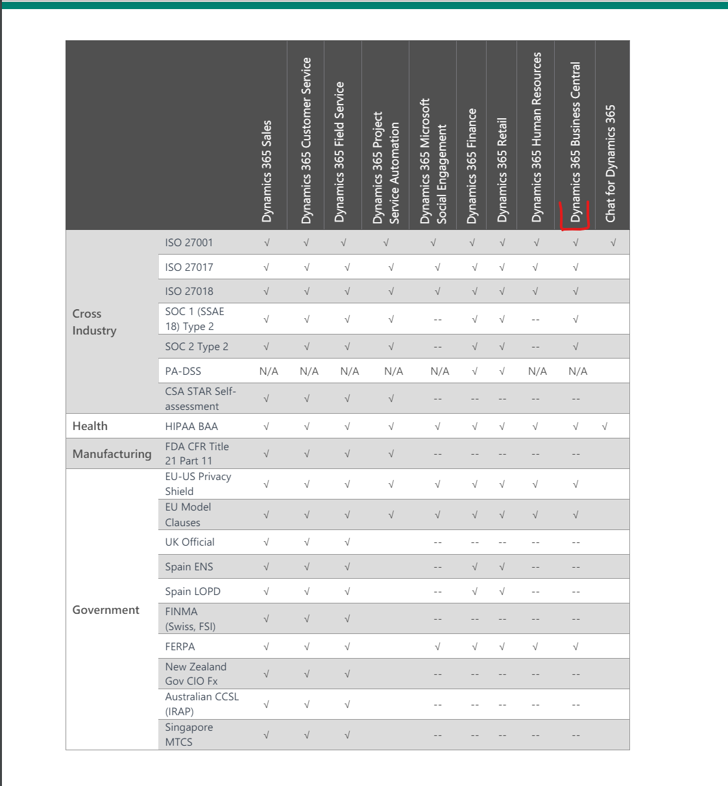

Business Centrali hind
Business Centrali litsentsid on kasutajapõhised ja kuutasulised. Peamised litsentsitüübid ning nende hinnad on järgmised:
- Essential — 59 EUR kasutaja kohta kuus
- Premium — 94 EUR kasutaja kohta kuus
- Team Member — 7 EUR kasutaja kohta kuus
- Device — 34 EUR seadme kohta kuus
Essential litsents katab enamiku äriprotsesse: finantsjuhtimise, ostude ja müügiga seotud moodulid, laohalduse, projektihaldusse ning põhivara arvestuse. See on tüüpiliselt kõige levinum valik. Premium litsents lisab Essential'ile tootmise (Manufacturing) ja teenusehalduse (Service Management) moodulid.
Device litsents on mõeldud juhtudeks, kus üht seadet kasutab kordamööda mitu inimest — näiteks laos olev skanneriterminal. Sel juhul makstakse seadme, mitte kasutaja eest.
Lisaks on olemas tasuta välise raamatupidaja litsents, mis võimaldab ettevõtte välispartneril (raamatupidajal) ligipääsu ilma täiendava kuutasuta.
Seega on Business Centrali minimaalne hind 59 EUR kuus ühe Essential kasutaja kohta.
Mida selle eest saab?
Business Centrali kuutasu sisaldab märkimisväärselt palju:
- Täielikud API-d integratsioonide loomiseks
- Automaatsed varukoopiad ja katastroofile taastamine
- Mobiilirakendus (iOS ja Android)
- Õigus süsteemi kohandada ja laiendada (AL arendus)
- Kuni 50 000 kohandatavat objekti
- Automaatsed versiooniuuendused kaks korda aastas
- Integratsioonid teiste Microsoft 365 toodetega (Teams, Outlook, Excel jne)
- 80 GB andmemahtu ettevõtte kohta
- Saadaval üle 170 riigi lokalisatsiooniga
- ISO 27001 ja SOC 2 sertifikaadid
- 99,9% käideldavuse garantii (SLA)

Kuidas Business Centralit kasutada saab?
Business Centralit saab osta ja kasutusele võtta ainult läbi Microsofti volitatud partnerite. Partner aitab lisenseerida, juurutada ning kohandada süsteemi vastavalt ettevõtte vajadustele. Otse Microsoftilt Business Centralit ei osteta — partneri roll on oluline nii tehnilise toe kui ka ärinõustamise seisukohalt.